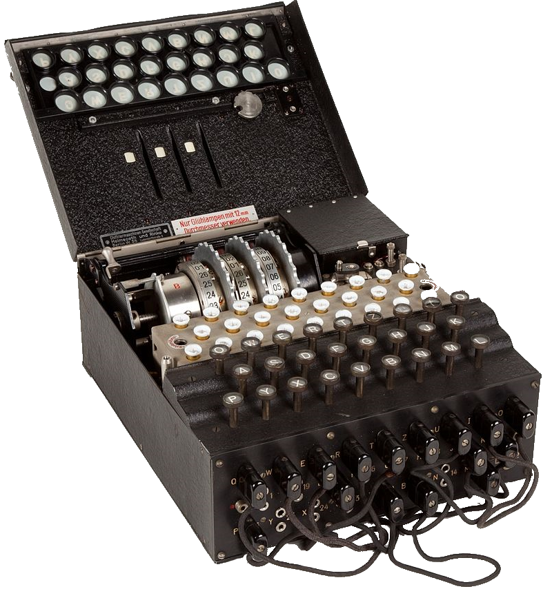

Kryptografie je obor zabývající se zabezpečením komunikace a uchováváním informací tak, aby byly chráněny před neautorizovaným přístupem a manipulací. Tento obor se vyvinul z potřeby uchovávat a přenášet citlivé informace v bezpečném prostředí, ať už se jedná o vojenské zprávy, bankovní transakce nebo soukromou korespondenci.
Existují různé techniky kryptografie, ale dvě základní kategorie jsou symetrická a asymetrická šifrování:
Symetrické šifrování: Používá jediný klíč pro šifrování a dešifrování dat. Tento klíč musí být sdílen mezi komunikujícími stranami, což může být zranitelné v případě, že klíč unikne. Příklady symetrických šifrovacích metod zahrnují AES (Advanced Encryption Standard) a DES (Data Encryption Standard).
Asymetrické šifrování: Tato metoda využívá dvojici klíčů – veřejný a privátní. Veřejný klíč je použit k šifrování zpráv, zatímco privátní klíč slouží k dešifrování. Tato technika umožňuje bezpečnou komunikaci, aniž by bylo nutné sdílet tajný klíč. Příkladem asymetrické šifrovací metody je RSA (Rivest-Shamir-Adleman).
Kryptografie se používá nejen k šifrování zpráv, ale také k ověřování identity (digitální podpisy), integritě dat (hashovací funkce) a dalším bezpečnostním účelům. Je to klíčový nástroj pro zajištění soukromí a bezpečnosti v digitálním světě.
